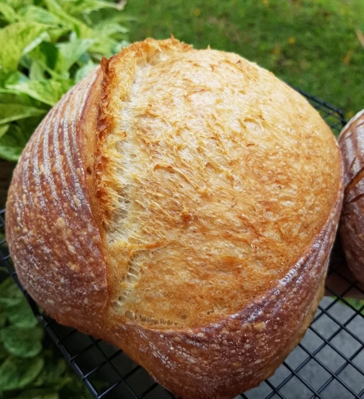
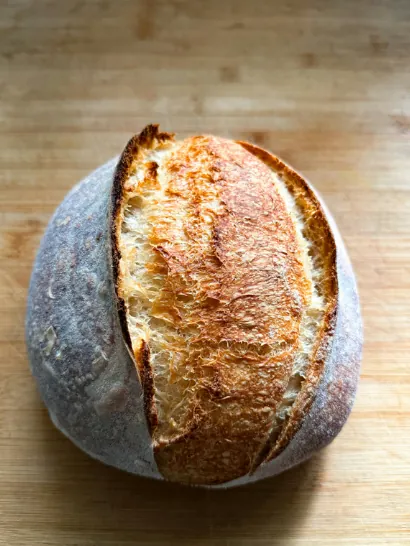
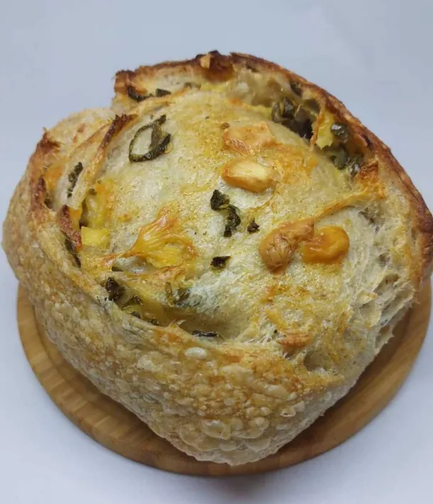
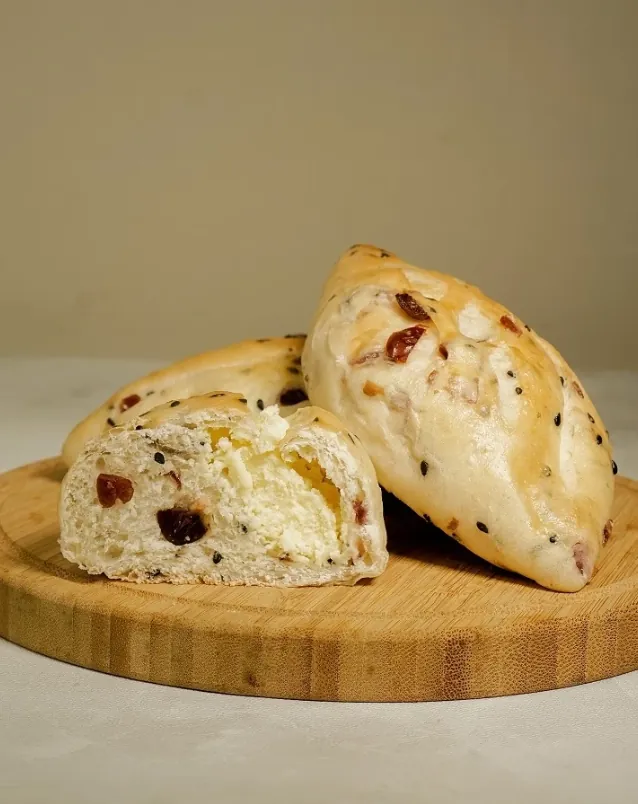
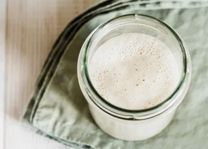

ROTI SOURDOUGH ARTISAN · GADING SERPONG
Rasa yang
diberi waktu.
Fermentasi alami, tangan yang telaten, dan aroma roti yang membuat rencana sarapan mendadak jadi serius.

Kami percaya
pada hal-hal
yang tumbuh pelan.
Tepung, air, garam, dan waktu. Bahan sederhana yang diberi ruang untuk menjadi sesuatu yang istimewa.
Starter hidup kami dirawat setiap hari. Adonan difermentasi alami, dibentuk tangan dalam batch kecil, lalu dipanggang segar setiap hari. Tidak terburu-buru—roti yang enak juga tidak suka dikejar-kejar.
Temukan cara memesan roti kami ↘Roti sungguhan.
Tak perlu filter.
Beberapa potret dari dapur Seragi. Bentuk dan warna tiap batch bisa sedikit berbeda—itulah serunya buatan tangan.




STARTER HIDUP, DIRAWAT SETIAP HARI04 / CARA PESAN
Dari chat
ke roti hangat.
- 01
Tanyakan menu dan ketersediaan lewat WhatsApp atau Telegram.
- 02
Konfirmasi pesanan dan pembayaran melalui QRIS atau transfer.
- 03
Untuk pickup, alamat dikirim via WhatsApp setelah order dikonfirmasi.
Ada yang
ingin ditanyakan?
Usaha rumahan di Gading Serpong. Tidak ada toko fisik atau alamat publik; detail pickup dikirim setelah pesanan dikonfirmasi.